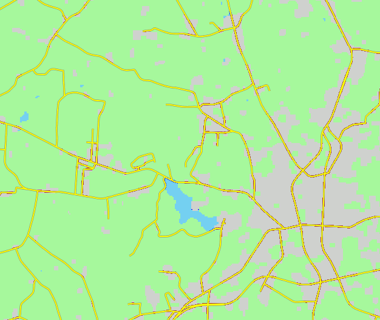
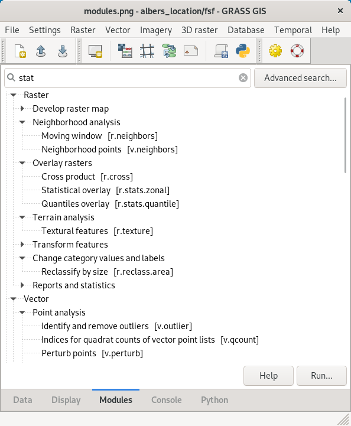
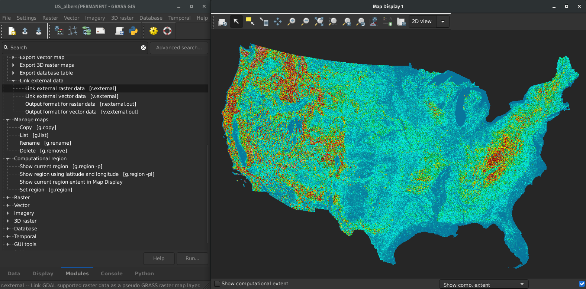
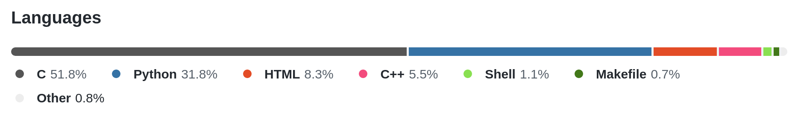
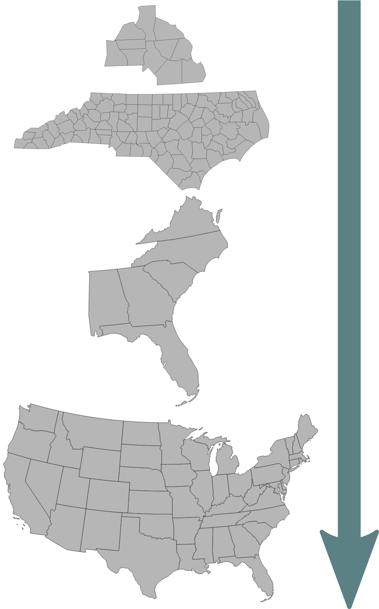

FUTURES: Urban Growth Modeling at Scale
Anna Petrasova
NCSU GeoForAll Lab
at the
Center for Geospatial Analytics
NC State University

DOI, Open GIS Group, Dec 2nd, 2021
Anna Petrasova
- BS & MS in Geoinformatics, Czech Technical University in Prague
- PhD in Geospatial Analytics, NC State
- Geospatial Research Software Engineer at the Center for Geospatial Analytics, NC State
- GRASS GIS Development Team Member
- GRASS GIS Project Steering Committee Member
- Open Source Geospatial Foundation Charter Member
FUTURES
- developed at Center for Geospatial Analytics (CGA), NC State
- to address the regional-scale environmental impacts of urbanization
- explicitly captures the spatial structure of development
- flexible (in terms of predictors, scenarios)

FUTure Urban-Regional Environment Simulation
FUTURES
- simulates urban growth (undeveloped to developed)
- accounts for location, quantity, and pattern of change
- patch-based land change model
- stochastic
FUTURES
- simulates urban growth (undeveloped to developed)
- accounts for location, quantity, and pattern of change
- patch-based land change model
- stochastic

FUTURES software implementation
- open source
- GRASS GIS addon
- set of modules r.futures.*
- written in C and Python
- runs on all platforms
- hosted on GitHub

Why GRASS GIS?
All needed GIS functions at hand
Why GRASS GIS?

Automatically generated CLI and GUI
Why GRASS GIS?
Efficient I/O libraries and processing of large datasets
Why GRASS GIS?
Modular architecture: modules in C/C++ and Python
Why GRASS GIS?
Infrastructure for online manual pages and distribution of binaries
Why GRASS GIS?

Maintained by community and developers
Why CONUS case study?
- previous case studies showed potential to scale up
- available datasets (NLCD, etc.)
- available computing infrastructure
- to provide detailed national urbanization projections
- to study urbanization trends inside and outside of floodplain
